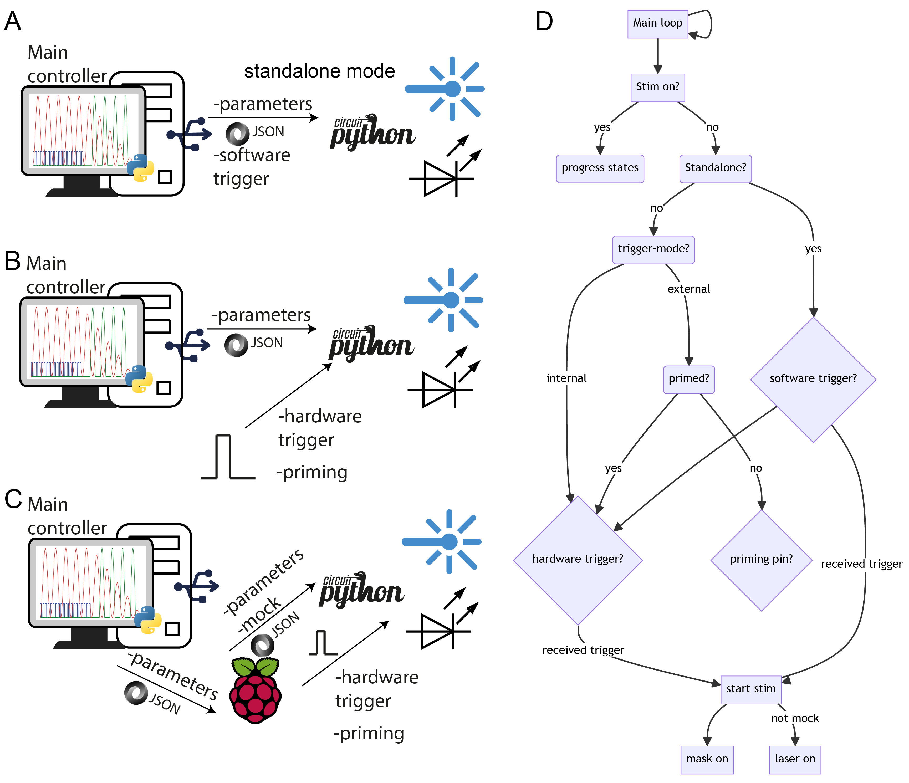

User Guide¶
Warning: Laser radiation is harmful to eyes and skin. Avoid direct eye exposure, and wear protective clothing and goggles when working with lasers! 
FreiLaser supports multiple operational modes, each designed to accommodate different experimental requirements:
Standalone mode - A In this mode, all parameters and triggers are controlled directly from the GUI without the need for additional hardware. This is the simplest mode to implement and is ideal for straightforward experimental setups.
Semi-standalone mode - B Parameters are set via the GUI, but triggering and, optionally, priming signals are generated by external hardware. This mode offers a balance between control and integration with other experimental apparatus.
Autonomous mode - C In this most flexible mode, external devices (e.g., another Raspberry Pi Pico controlling the behavioral setup) manage or transfer parameters to FreiLaser via the API. Both trigger and priming signals are also generated by external hardware. This mode allows deep integration into existing systems and high flexibility.
Operation procedure:¶
Set the desired parameters via the GUI or API.
(optional) Set the mock signal if necessary.
(optional) Drive the prime pin HIGH if using priming.
Drive the trigger pin HIGH to start stimulation.
Stimulation will continue according to the set parameters.
Set the trigger and prime pins to LOW to enable the next trigger.
(optional) Set new parameters if further adjustments are needed.
For the simple case of using the same stimulation parameters, those only need to be set once. Then, the trigger signal can be delivered repeatedly to initiate stimulations.
Triggering and Priming¶
If using an “internal” trigger stimulus, which is ensured to occur only at desired time points, the use of priming is not necessary. For “external” triggers that may occur repeatedly, a priming procedure can be used. In this procedure, a HIGH signal on the priming pin sets the FreiLaser in the primed state, such that the next trigger signal will start the stimulation. Repeated trigger signals without a new priming signal will not initiate stimulation. The trigger signal is debounced for 5~ms to prevent spurious signals from triggering the stimulation.
Stimulation parameters¶
Stimulation types:
Square - TTL-like square wave signal. The amplitude, frequency and duty-cycle can be varied.
Sinusoidal - slowly changing signal. The amplitude and frequency can be varied.
Half-sinusoidal - only upper part of the sinusoidal, with signal going to 0 for half-phase.
Further parameters:
Burst duration: Total duration of the pulse train in milliseconds (ms).
Pulse width (square only): Duration of a single pulse in milliseconds (ms).
Duty cycle (square only): Duration of a single pulse in relation to its phase-duration.
Frequency -Frequency of the pulse train (Hz).
Attenuation - (sinusoidal): Duration (ms) over which the pulse train continues while ramping down the amplitude to 0.
Delay : Delay (ms) between the trigger and the start of the pulse train. This can be used to offset a pulse train relative to others.
Power: If calibrated, the desired output power (mW); otherwise, in percentage (%) of the maximum laser output.